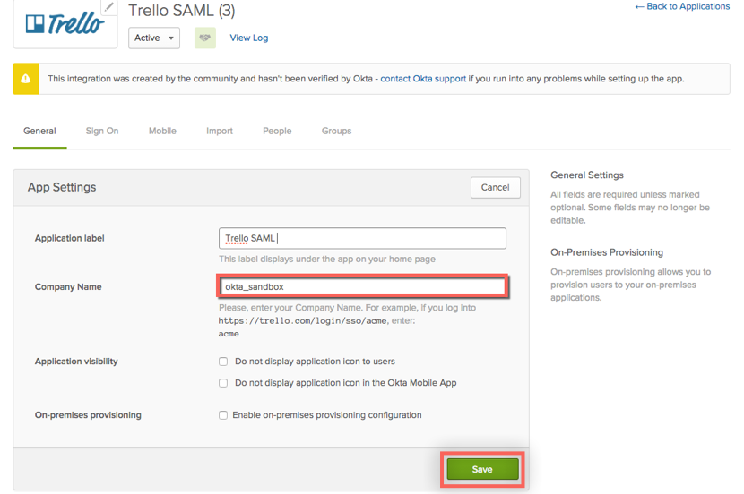

Contact your Trello Account Representative and request that they enable SAML for your account.
Provide the following information:
SAML Certificate: Download then upload the following:
Sign into the Okta Admin Dashboard to generate this variable.
SAML SSO URL: Copy and paste the following:
Sign into the Okta Admin Dashboard to generate this variable.
Trello will process your request and send you a confirmation email. They should also provide you with an Enterprise ID.
In Okta, select the General for the Trello app.
For Company Name, enter the Enterprise ID provided by Trello.
Click Save.

Done!
Notes:
SP-initiated flows, IdP-initiated flows, and Just In Time (JIT) provisioning are all supported.